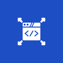

Hire Dedicated ERPNext Developers
Work with ERPNext developers who can join ongoing projects, improve workflows, build custom modules, and support internal teams without long onboarding cycles. We offer flexible hiring models for businesses that need dependable ERPNext development capacity.
Talk to an ERPNext ExpertWho Should Hire Our ERPNext Developers
We work with businesses that already rely on ERPNext or are planning to expand it internally but need experienced ERPNext developers to handle workflow logic, integrations, custom modules, upgrades, and ongoing technical improvements.
-
Startups building ERP workflows from scratch
Our ERPNext developers help startups design clean workflows, avoid rework, and build systems that support growth from the very beginning.
-
SMBs migrating from legacy systems
Our ERPNext developers assist with migration scripts, legacy data mapping, validation, and ERPNext environment preparation to reduce operational disruption during system transitions.
-
Enterprises needing ongoing ERPNext assistance
Extend your internal team with ERPNext developers who manage configuration updates, integrations, version upgrades, performance optimization, and long-term ERPNext technical continuity while keeping systems stable, secure, and upgrade-ready.
-
Product-led companies requiring custom ERPNext modules
Build custom ERPNext modules, workflows, and integrations aligned with your product and operational requirements. Our ERPNext developers focus on building flexibility, maintainability, and compatibility with future ERPNext updates.
6 Reasons to Hire ERPNext
Developers from CloudConverge
ERPNext is deeply connected to how your business operates. That’s why teams choose CloudConverge, not just for technical skills, but for clarity, ownership, and systems that work in real life.
-
01
Proven
ERPNext ExpertiseOur ERPNext developers have worked hands-on with custom workflow logic, API integrations, reporting structures, upgrade-safe ERPNext extensions, and operational automations across multiple business environments. We don’t experiment on live systems. We follow proven approaches that keep your ERP clean, stable, and ready for growth.
-
02
Long-Term ERPNext Development Continuity
ERPNext work doesn’t end at go-live. Our developers stay involved through workflow adjustments, feature expansion, version upgrades, performance fixes, and integration changes so your ERP remains stable and operational over time.
-
03
Flexible
Engagement ModelsEvery ERPNext project has different needs. Some need hands-on support all the way through, while others just need help at certain points. We don’t force a set approach on you. Instead, we shape our services around what you actually need and how your team works.
-
04
Fast Onboarding &
Immediate ContributionOur developers step in, understand your setup, and get to work without long ramp-up cycles. By learning your processes and priorities early, we reduce delays and keep progress moving.
-
05
Consistent
Ownership and AccountabilityYou will work with ERPNext developers who stay involved throughout the project. This avoids repeated explanations, improves communication, and ensures someone is always responsible for the system’s health and progress.
-
06
Security,
NDA & IP ProtectionWe take the security and privacy of your ERP environment seriously. All projects begin with a structured NDA and robust IP protection; your organizational data, ERPNext configuration, and any custom code remain safe and always within reach.
What You Can Hire Our ERPNext Developers For
When you hire ERPNext developers from CloudConverge, you’re bringing in ERPNext experts who understand business processes, system dependencies, and long-term maintainability, so your ERP supports daily operations without becoming a bottleneck.
ERPNext Deployment Assistance
Our ERPNext developers assist internal teams with workflow configuration, permissions setup, module structuring, deployment preparation, and ERP environment setup based on operational requirements.
What This Includes:
- Business requirement analysis and workflow mapping
- ERPNext solution architecture and planning
- System setup, configuration, and permissions
- Go-live support and stabilization

Custom ERPNext Development
When the standard ERPNext capabilities fail to meet the needs, our developers build custom modules, workflow automations, approval systems, and ERP extensions that remain maintainable and upgrade-safe over time.
What This Includes:
- Custom ERPNext module development
- Workflow customization and automation
- Feature enhancements aligned with business logic
- Upgrade-safe ERPNext customization services
ERPNext API & System Integrations
Modern businesses depend on several systems. Our ERPNext developers assist you in integrating ERPNext with third-party tools and internal platforms using secure integrations and a custom API. The outcome is a data flow that is smoother, with fewer manual activities, and increased system visibility.
What This Includes:
- ERPNext integrations with CRM, accounting, eCommerce, and payment systems
- Custom API development
- Secure data synchronization
- Cross-platform system connectivity
Long-Term ERPNext Maintenance
ERPNext doesn’t stop evolving, and neither should your system. Our ERPNext developers help keep your ERP stable, secure, and performant over time. From fixing issues to handling upgrades and performance tuning, our developers ensure ERPNext continues to support your operations without disruption.
What This Includes:
- Bug fixes and issue resolution
- ERPNext version upgrades
- Performance optimization
- Ongoing system monitoring and improvements
ERPNext Data Transition Assistance
Migrating to ERPNext requires precision. When you hire ERPNext developers at CloudConverge, we handle the whole process of migration, including the extraction of data from the existing systems, cleaning, arranging, and transferring information to ERPNext. This makes the process of launching your new ERP start with quality data and minimal downtime.
What This Includes:
- Legacy system to ERPNext migration
- Data cleaning, validation, and structuring
- Secure data imports
- Post-migration testing and verification
What Clients Praise About CloudConverge
Trusted ERPNext development and migration support for businesses that need stability, accuracy, and long-term scalability.
-
We brought in CloudConverge ERPNext developers to support integrations, upgrades, and workflow improvements across our ERP environment. Their developers were cautious in integrations and upgrades, and this supported us in avoiding downtime and keeping the systems stable.
-
The ERPNext data migration was handled with attention to detail, especially around data accuracy and reporting. CloudConverge stayed involved beyond implementation, which gave us confidence in the system long-term.
Ready To Move Forward With ERPNext?
Tell us what you need help with, and we’ll align you with the right ERPNext developers to get the work done properly.
Book Your Free ConsultationFlexible Engagement Models to Hire ERPNext Developers
Every ERPNext project moves differently. That’s why we offer simple, flexible engagement models to match how you want to work.
-
Dedicated
ERPNext DeveloperFor teams that need consistent support across implementation, customization, and ongoing ERPNext development.
Best for:
– Ongoing ERPNext expansion
– Internal ERP teams
– Workflow improvements -
On-Demand
ERPNext SupportFor short-term needs like bug fixes, upgrades, integrations, or performance issues, no long setup is required.
Best for:
– Upgrade issues
– Temporary technical gaps
– Workflow fixes -
Fixed
Project EngagementFor ERPNext, work with a clear scope, timeline, and outcome, such as migrations or custom module builds.
Best for:
– API integrations
– ERPNext migrations
– Custom module builds
ERPNext Workflows Our Developers Commonly Handle
No two industries run the same, and neither should their ERP. Our ERPNext developers tailor implementations, custom modules, and workflows to support industry-specific processes while keeping systems scalable and upgrade-ready.
-
Manufacturing
-
Retail & ECommerce
-
Distribution & Logistics
-
Healthcare

Professional Services

Education
How Hiring ERPNext Developers From
CloudConverge
Works
-
01
Tell Us What You Need Help With
Share your current ERPNext setup, challenges, or the kind of work you need done.
-
02
We Match You with the Right Developers
Based on your requirements, we assign ERPNext developers who have experience working on similar systems, workflows, and business operations.
-
03
Developers Start Working with Your Team
Our ERPNext developers onboard into your existing setup, understand the workflow, and begin contributing without unnecessary delays or long onboarding cycles.
-
04
Scale Support as Your ERP Grows
As your ERPNext environment expands, you can continue with the same developers for upgrades, new modules, integrations, workflow changes, or long-term technical support.
FAQ's
Yes. Our ERPNext developers can deal with implementation, configuration, custom module development, integrations, data migration, upgrades, and support. They will make sure that the system is compatible with how your business is run.
Yes. A lot of clients approach us when ERPNext is already in operation. We look through the setup, clean-up processes, or ad hoc code and contribute to the stabilization or expansion of the system without interrupting the day-to-day processes.
Yes. We remain engaged after launch to manage fixes, improvements, upgrades, and performance tuning. Continuous support will assist in making sure that ERPNext runs smoothly with your requirements.
Yes. We lead teams through the way the system works, describe workflows that are unique to the team, and provide documentation where necessary. This is aimed at ensuring that users feel comfortable using ERPNext and do not rely on developers to do all tasks.
It will be based on the size and complexity of your business. Simple configurations are possible within a period of a few weeks, and more advanced configurations with custom workflows and integrations might also require more time. We tend to separate the work into stages so that teams start utilizing the system as improvements are on the way.
It will be based on the size and complexity of your business. Simple configurations are possible within a period of a few weeks, and more advanced configurations with custom workflows and integrations might also require more time. We tend to separate the work into stages so that teams start utilizing the system as improvements are on the way.